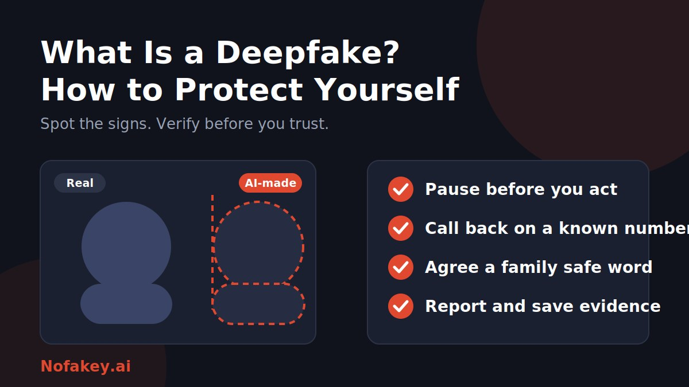

A call from "your daughter" asks for urgent money. A video shows a public figure saying something shocking. A colleague on a video call approves a payment. Any of these could be real, or any could be a deepfake. This guide explains what deepfakes are and the practical habits that protect you.
What is a deepfake?
The word blends "deep learning," a kind of AI, with "fake." Deepfakes can be:
- Video: a face swapped onto another body, or lips made to match words never spoken.
- Audio: a cloned voice that can say anything typed into a tool, sometimes from a short sample.
- Images: realistic but invented photos, or real photos altered to change what they show.
- Live calls: real-time face or voice filters used on a video or phone call.
Not every deepfake is harmful. Film studios, educators and comedians use similar tools openly. The danger comes when the fake is used to deceive, defraud, harass or spread false information.
How deepfakes are made
In simple terms, an AI model studies lots of photos, video or recordings of a person, learns their face or voice, then generates new content that imitates them. Public photos, social videos, voicemails and interviews can all serve as source material. That is why the amount of material available about you matters.
Common ways deepfakes are used against people
| Use | What it looks like |
|---|---|
| Family emergency scams | A cloned voice of a relative asks for urgent money or secrecy |
| Workplace payment fraud | A fake "boss" on a call or voice note asks for a transfer or gift cards |
| Fake endorsements | A celebrity or expert seems to promote a product, investment or giveaway |
| Identity checks | Fake faces or voices used to get past verification |
| Misinformation | A fake clip of a public figure spread to mislead voters or the public |
| Harassment and blackmail | Fake intimate or embarrassing imagery used to threaten or shame |
Warning signs of a deepfake
What you might notice
- Face and video: lips that do not quite match the words, odd blinking, smooth or waxy skin, flickering edges, or a glitch when a hand or object passes in front of the face.
- Lighting and background: shadows or reflections that do not match, or warping around the head and hair.
- Voice: flat emotion, strange pacing, missing breaths, or an accent that wobbles.
- Images: distorted hands, text or jewellery, and backgrounds that do not make sense.
Why those clues are not enough
These glitches are getting rarer as tools improve, and a good fake may show none. Spotting flaws is a bonus, not a defence. Detection tools can help, but none is perfect. The safest signs to watch for are behavioural:
- Urgency and secrecy: "Do it now" and "don't tell anyone."
- Unusual requests: money, codes, passwords or gift cards from someone who would not normally ask.
- New contact details: "I'm on a new number" or a call from an unknown line.
- Refusal to verify: excuses for not calling back or turning on a different channel.
How to protect yourself from deepfakes
- Pause. Scammers rely on speed and emotion. A short delay breaks the spell.
- Verify on a second channel. Hang up and call the person back on a number you already have, or message them in a chat you know is theirs.
- Agree a safe word with family. Pick a word or question only your close circle knows, and use it if someone asks for urgent help.
- Ask something only the real person would know, and avoid questions whose answers are posted online.
- Set payment rules at work. Require a second approver and a call-back for any new payee or urgent transfer, whoever asks.
- Limit what you share publicly. Review privacy settings, and think twice before posting clear face shots, voice clips or videos of children.
- Protect your accounts. Use a password manager and two-step sign-in, so a fake voice or face alone cannot open them.
- Check the source. For a shocking clip, look for the original source and for coverage from reliable outlets before sharing.
- Do not rely on a single tool. Use detection tools as one input, never as proof.
Realistic examples
These are composite examples to show the pattern. They are not reports about real people.
Example 1: The panicked relative
A voice message says, "I've had an accident, please send money now and don't tell Mum."
What to do: hang up, call the relative on their saved number, and ask the family safe word.
Example 2: The video call from the boss
A "manager" on video asks you to pay a new supplier today, and says the usual approval can be skipped.
What to do: follow your approval process and confirm through a known contact method.
Example 3: The celebrity giveaway
A clip shows a famous person promoting a "guaranteed return" scheme with a link in the caption.
What to do: do not click. Check the person's verified accounts and treat guaranteed returns as a warning sign.
What to do if you are targeted
- Stop and do not pay or reply to threats or demands. Paying rarely ends it.
- Save evidence: screenshots, links, usernames, dates and messages. Do not delete anything yet.
- Report it to the platform where it appears, using its impersonation or synthetic media reporting options.
- Contact your bank immediately if you sent money or shared card details, and change passwords if you shared them.
- Tell people you trust. Warn family, friends or colleagues who might receive the fake.
- Report to the police or your national cybercrime or consumer authority, and seek legal advice if the fake is damaging your reputation or is intimate imagery.
- Look after yourself. Being targeted is distressing. Lean on friends, family or a support service.
If you used your ID photos or documents in a scam, see our guide on the fake AI identity reverification scam.
If you make AI content, label it
Clear labels make it harder for synthetic media to deceive and build trust with your audience. Our guide on how to label AI-generated content covers images, video, audio and text. For payment scams that use AI, read about the fake AI agent payment scam.
Conclusion
Deepfakes work by borrowing trust. You do not need to out-detect the technology. Pause, verify on a second channel, agree a safe word with family, put approval steps around money, and share less of your face and voice publicly. Not sure about a message or claim? Paste it into our free checker for a quick first read, and browse more guides on the Nofakey.ai blog.
Frequently asked questions
What is a deepfake in simple terms?
A deepfake is a video, image or audio clip created or altered with AI so that it shows or sounds like a real person saying or doing something they never did. The word blends "deep learning" and "fake."
How can I tell if a video or voice is a deepfake?
Look for odd lip sync, unnatural blinking or skin, glitches when something passes in front of a face, and robotic or oddly paced speech. These clues are unreliable as fakes improve, so verify through a second channel instead of trusting your eyes and ears.
Are deepfakes illegal?
It depends on the country and the use. Many places have laws against fraud, impersonation, harassment and non-consensual intimate imagery, and some have deepfake-specific rules. Parody and entertainment uses are often treated differently. Ask a local legal professional about your situation.
What should I do if someone makes a deepfake of me?
Save evidence, do not engage with the creator, report it to the platform, tell people you trust, report to the police or relevant authority, and seek support if it affects your wellbeing.
Can I protect myself completely from deepfakes?
No. You can lower your risk by limiting what you share publicly, using verification habits and enabling account protections, but no single step is a guarantee.
Got a message, clip or claim you are unsure about?
Run it through the checker